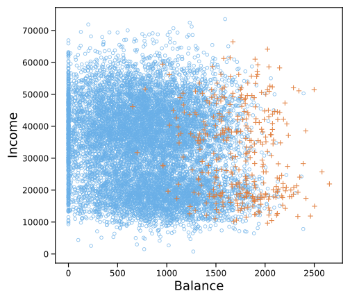
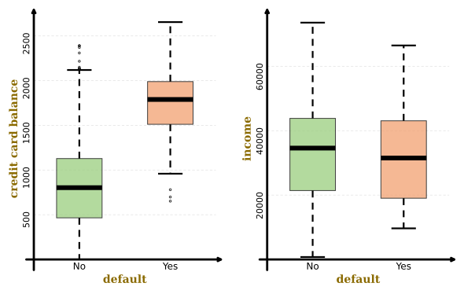
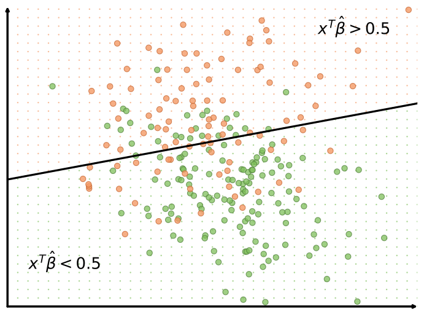
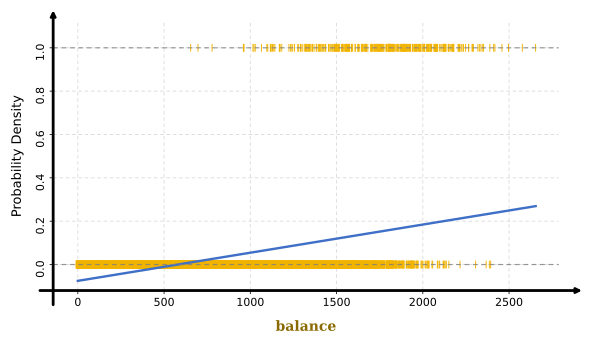
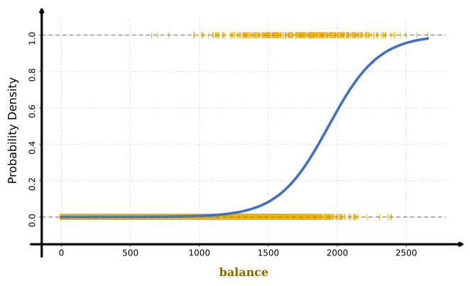
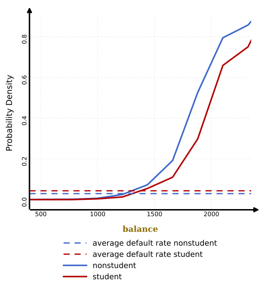
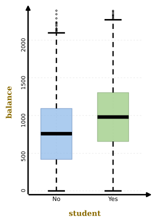
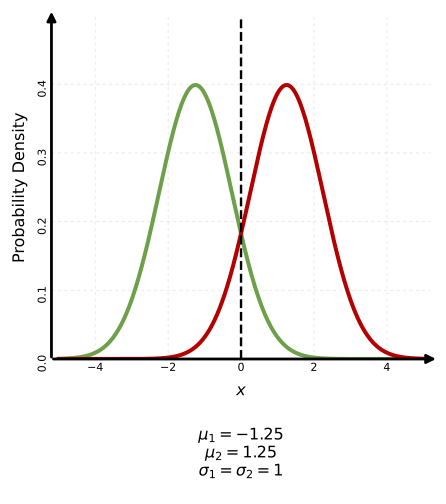
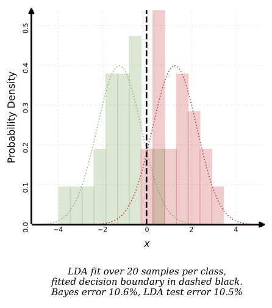
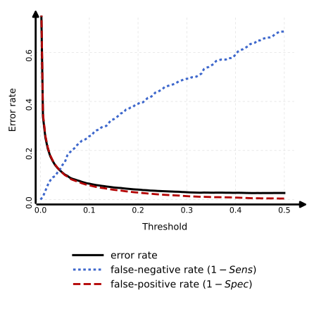

Học máy
Bài 3: Bài toán phân lớp
Trường ĐH Công nghệ – Đại học Quốc gia Hà Nội
Nội dung
1.
Tổng quan bài toán phân lớp
Phân lớp (Classification)
- Trong bài toán phân lớp, chúng ta muốn dự đoán các đầu ra định tính (categorical outputs).
- Ví dụ: Một khách hàng có hoàn trả khoản vay hay không? (Có / Không)
- Dữ liệu đầu vào: Thu nhập, số dư nợ thẻ tín dụng, trạng thái sinh viên.


Các ví dụ khác
- Email: Xác định email có phải là thư rác (spam) hay không.
- Y tế: Phân loại bệnh nhân mắc bệnh nào trong số \(k\) bệnh dựa trên các triệu chứng.
- Tài chính: Quyết định một giao dịch có phải là gian lận (fraudulent) hay không dựa trên lịch sử, vị trí, IP...
- Sinh học: Xác định các đột biến gây bệnh dựa trên trình tự DNA (lựa chọn đặc trưng).
Tại sao không dùng hồi quy tuyến tính?
Hồi quy tuyến tính có thể dùng cho phân lớp nhị phân khi mã hóa:
\[ Y= \begin{cases} 0 & \text{nếu } \color{#7FBF5B}\text{ lục} \\ 1 & \text{nếu } \color{#F39A66}\text{ đỏ} \end{cases} \]
- Dự đoán là Đỏ nếu \(\hat{y} > 0.5\).
- Dự đoán là Xanh nếu \(\hat{y} \le 0.5\).

Hạn chế với nhiều lớp (\(K > 2\))
Hồi quy tuyến tính không thể tổng quát hóa tốt cho hơn hai lớp:
- Thứ tự áp đặt: Việc gán \(Y \in \{0, 1, 2\}\) áp đặt một thứ tự và khoảng cách giữa các lớp (ví dụ: lớp 2 xa lớp 0 hơn lớp 1).
- Thiên kiến không đáng có: Trừ khi các nhãn có tính chất số đo (metric), việc áp đặt thứ tự sẽ gây ra sai số hệ thống.
- Hiện tượng che lấp (Masking): Một số lớp có thể bị che khuất hoàn toàn bởi các lớp khác trong không gian dự đoán (Mô hình có xu hướng dự đoán thiên về một vài lớp “mạnh”).
2.
Hồi quy logistic
Vấn đề của Hồi quy tuyến tính
Nếu dùng hồi quy tuyến tính để dự đoán xác suất:
\[ p(X) = Pr[Y=1|X] = \beta_0 + \beta_1 X \]
- Mô hình có thể cho ra các giá trị ngoài khoảng \([0, 1]\).
- Điều này gây khó khăn cho việc diễn giải là xác suất.

Hàm logistic
Để đảm bảo \(p(X) \in [0, 1]\), ta sử dụng hàm logistic (còn gọi là hàm sigmoid):
\[ p(X) = \frac{e^{\beta_0 + \beta_1 X}}{1 + e^{\beta_0 + \beta_1 X}} \]
- Mọi giá trị của \(X\) đều cho kết quả trong khoảng \((0, 1)\).
- Đường cong có dạng chữ S.

Tỷ lệ chênh và logit
- Tỷ lệ chênh (odds): \(\frac{p(X)}{1-p(X)} = e^{\beta_0 + \beta_1 X}\)
- Chỉ số này có giá trị từ \(0\) đến \(\infty\).
- Logit (log-odds): \(\log\left(\frac{p(X)}{1-p(X)}\right) = \beta_0 + \beta_1 X\)
- Hàm logit có mối liên hệ tuyến tính với \(X\).
Diễn giải mô hình logistic
- Khi tăng \(X\) thêm 1 đơn vị:
- Cộng thêm \(\beta_1\) vào logit.
- Nhân tỷ lệ chênh với \(e^{\beta_1}\).
- Ảnh hưởng lên \(p(X)\) là phi tuyến:
- Nếu \(\beta_1 > 0\): tăng \(X\) sẽ tăng \(p(X)\).
- Nếu \(\beta_1 < 0\): tăng \(X\) sẽ giảm \(p(X)\).
Ước lượng hợp lý cực đại
- Mục tiêu: Tìm các hệ số sao cho dữ liệu quan sát được có xác suất xuất hiện lớn nhất theo mô hình.
- Hàm hợp lý (Likelihood) cho mô hình logistic: \[ \begin{aligned} L(\beta_0, \beta_1) &= Pr[Y_1=y_1, \ldots, Y_n=y_n | X_1=x_1, \ldots, X_n=x_n; \beta_0, \beta_1] \\ &= \prod_{i=1}^{n} p(x_i)^{y_i}(1-p(x_i))^{1-y_i} \end{aligned} \]
Ước lượng hợp lý cực đại
- Thực tế: ta cực đại hóa log-likelihood hoặc cực tiểu hóa âm log-likelihood (NLL): \[ -\ell(\beta_0,\beta_1) = -\sum_{i=1}^{n}\left[y_i\log p(x_i) + (1-y_i)\log(1-p(x_i))\right] \]
- Thường giải bằng các phương pháp tối ưu số như Newton-Raphson (ESL, mục 4.4.1).
Ví dụ: Một biến liên tục
Dự đoán vỡ nợ dựa trên số dư nợ thẻ tín dụng (balance):
- \(\hat{p}(1000) = \frac{e^{-10.65 + 0.0055 \times 1000}}{1 + e^{-10.65 + 0.0055 \times 1000}} \approx 0.00576\)
- \(\hat{p}(2000) \approx 0.586\)
| Biến | Ước lượng | Sai số chuẩn | Z-statistic | P-value |
|---|---|---|---|---|
| Chặn (\(\beta_0\)) | -10.6513 | 0.3612 | -29.5 | < 0.0001 |
| Số dư nợ thẻ tín dụng (\(\beta_1\)) | 0.0055 | 0.0002 | 24.9 | < 0.0001 |
Ví dụ: Một biến nhị phân
Dự đoán vỡ nợ dựa trên trạng thái sinh viên (student = Yes/No):
| Hệ số | Ước lượng (\(\beta\)) | Z-statistic | P-value |
|---|---|---|---|
| Chặn (\(\beta_0\)) | -3.5041 | -49.55 | < 0.0001 |
| Sinh viên [Yes] \( (\beta_1) \) | 0.4049 | 3.52 | 0.0004 |
- \(\hat{p}(\text{student=Yes}) \approx 0.00431\)
- \(\hat{p}(\text{student=No}) \approx 0.00292\)
- ➡️ Sinh viên có xác suất vỡ nợ cao hơn nếu chỉ xét riêng biến này.
Hồi quy logistic bội
\[ \log\left(\frac{p(X)}{1-p(X)}\right) = \beta_0 + \beta_1 X_1 + \cdots + \beta_p X_p \]
Kết quả trên bộ dữ liệu Default:
| Biến | Ước lượng | Sai số chuẩn | Z-statistic | p-value |
|---|---|---|---|---|
| Chặn (\(\beta_0\)) | -10.8690 | 0.4923 | -22.08 | <0.0001 |
| Số dư nợ thẻ tín dụng (balance) \( (\beta_1) \) | 0.0057 | 0.0002 | 24.74 | <0.0001 |
| Thu nhập (income) \( (\beta_2) \) | 0.0030 | 0.0082 | 0.37 | 0.7115 |
| Sinh viên [Yes] \( (\beta_3) \) | -0.6468 | 0.2362 | -2.74 | 0.0062 |
⚠️ Tại sao hệ số sinh viên lại đổi dấu từ Dương sang Âm?
Hiện tượng gây nhiễu (Confounding)


Hiện tượng gây nhiễu (Confounding)
- Sinh viên thường có số dư nợ thẻ tín dụng (balance) cao hơn người đi làm.
- Balance cao dẫn đến xác suất vỡ nợ cao.
- Nếu cố định balance, sinh viên thực tế ít rủi ro hơn người không phải sinh viên.
- Mô hình một biến bị nhiễu bởi sự tương quan giữa student và balance.
3.
Phân lớp Bayes & Phân tích định biệt tuyến tính (LDA)
Công thức Bayes
Xác định xác suất hậu nghiệm từ xác suất tiền nghiệm và mật độ lớp:
\[ Pr(Y|X) = \frac{Pr(X|Y)Pr(Y)}{Pr(X)} \]- \(Pr(Y)\): Xác suất tiền nghiệm của lớp.
- \(Pr(X|Y)\): Xác suất của đầu vào khi biết lớp (mật độ lớp).
- \(Pr(X)\): Hằng số chuẩn hóa, thường không cần tính toán vì chỉ phụ thuộc vào dữ liệu đầu vào.
Phân lớp Bayes cho K lớp
Sử dụng công thức Bayes để xác định xác suất hậu nghiệm cho mỗi lớp:
\[ p_k(x) = Pr(Y=k|X=x) = \frac{\pi_k f_k(x)}{\sum_{l=1}^{K} \pi_l f_l(x)} \]- \(\pi_k\): Xác suất tiền nghiệm của lớp \(k\), ước lượng từ dữ liệu: \(\hat{\pi}_k = \frac{n_k}{n}\).
- \(f_k(x)\): Mật độ xác suất của điểm \(x\) trong lớp \(k\).
- Nguyên tắc: Phân lớp điểm \(x\) vào lớp có xác suất hậu nghiệm \(p_k(x)\) lớn nhất.
Phân tích định biệt tuyến tính (LDA)
- Mọi lớp đều tuân theo phân phối chuẩn.
- Tất cả các lớp có cùng phương sai: \(\sigma_1^2 = \dots = \sigma_K^2 = \sigma^2\).
Hàm định biệt
Bằng cách lấy log của tử số và loại bỏ các thành phần không phụ thuộc vào lớp \(k\), ta có hàm định biệt tuyến tính:
\[ \delta_k(x) = x \cdot \frac{\mu_k}{\sigma^2} - \frac{\mu_k^2}{2\sigma^2} + \log \pi_k \]- Bộ phân lớp Bayes tối ưu sẽ chọn lớp có giá trị \(\delta_k(x)\) lớn nhất.
- Đường quyết định giữa hai lớp \(k\) và \(l\) là nơi \(\delta_k(x) = \delta_l(x)\).
Ví dụ LDA một chiều
Giả sử hai lớp có \(\pi_1 = \pi_2\), ta phân \(x\) vào lớp \(1\) nếu: \[ \begin{aligned} \delta_1(x) &> \delta_2(x) \\\Leftrightarrow x \cdot \frac{\mu_1}{\sigma^2} - \frac{\mu_1^2}{2\sigma^2} &> x \cdot \frac{\mu_2}{\sigma^2} - \frac{\mu_2^2}{2\sigma^2} \\\Leftrightarrow x \cdot (\mu_1 - \mu_2) &> \frac{\mu_1^2 - \mu_2^2}{2} \end{aligned} \]
Đường quyết định Bayes là điểm mà hai mật độ bằng nhau: \[ x = \frac{\mu_1^2 - \mu_2^2}{2(\mu_1 -\mu_2)} = \frac{\mu_1 + \mu_2}{2} \]

Ước lượng tham số
Thực tế, ước lượng tham số từ dữ liệu huấn luyện hữu hạn:
\[\hat{\mu}_k = \frac{1}{n_k} \sum_{i:y_i=k} x_i\] \[\hat{\sigma}^2 = \frac{1}{n-K} \sum_{k=1}^K \sum_{i:y_i=k} (x_i - \hat{\mu}_k)^2\] \[\hat{\pi}_k = \frac{n_k}{n}\]
Hàm định biệt ước lượng:
\[\hat{\delta}_k(x) = x \cdot \frac{\hat{\mu}_k}{\hat{\sigma}^2} - \frac{\hat{\mu}_k^2}{2\hat{\sigma}^2} + \log \hat{\pi}_k\]

LDA đa biến
Giả định mỗi lớp tuân theo phân phối chuẩn đa biến với cùng ma trận hiệp phương sai \(\Sigma\):
\[ f_k(x) = \frac{1}{(2\pi)^{D/2}|\Sigma|^{1/2}} \exp\left(-\frac{1}{2}(x-\mu_k)^T \Sigma^{-1} (x-\mu_k)\right) \]Hàm định biệt đa biến:
\[ \delta_k(x) = x^T \Sigma^{-1} \mu_k - \frac{1}{2} \mu_k^T \Sigma^{-1} \mu_k + \log \pi_k \]Biên quyết định giữa các lớp vẫn là các đường/mặt phẳng tuyến tính.
Ví dụ dữ liệu 2 chiều


4.
Đánh giá
hiệu năng
Vấn đề khi chỉ sử dụng sai số
Ví dụ phân loại vỡ nợ với hai đầu vào balance và student:
- Sai số huấn luyện LDA là 2.75% (sai 275 trên 10.000 dự đoán).
- Tuy nhiên: dữ liệu huấn luyện rất mất cân bằng (chỉ 3.33% thuộc lớp vỡ nợ).
- Nếu chỉ dự đoán tất cả là không vỡ nợ, ta đã đạt sai số 3.33%.
Ma trận nhầm lẫn
| Nhãn thực tế | |||
|---|---|---|---|
| Dự đoán | Không (-) | Có (+) | Tổng |
| Không (-) | 9,644 (TN) | 252 (FN) | 9,896 |
| Có (+) | 23 (FP) | 81 (TP) | 104 |
| Tổng | 9,667 | 333 | 10,000 |
Ma trận nhầm lẫn
Độ nhạy: tỷ lệ mẫu dương tính được dự đoán đúng.
Độ đặc hiệu: tỷ lệ mẫu âm tính được dự đoán đúng.
Độ chính xác dương tính: trong các mẫu dự đoán là dương tính, bao nhiêu mẫu thực sự dương tính.

Thay đổi ngưỡng quyết định
Nếu xem hai loại lỗi có chi phí như nhau, ngưỡng \(0.5\) là lựa chọn tự nhiên để ra quyết định: \[ \hat{y} = \begin{cases} 1 & \text{nếu } p_1(x) > 0.5 \Leftrightarrow \log\left( \frac{p_1(x)}{1 - p_1(x)} \right) > 0 \Leftrightarrow \delta_1(x) - \delta_0(x) > 0 \\ 0 & \text{ngược lại} \end{cases} \]
Tuy nhiên, ta có thể thay đổi ngưỡng để đánh đổi giữa độ nhạy và độ đặc hiệu, hoặc để phản ánh chi phí sai lầm khác nhau:
- Ngưỡng = \(0.5\): \(Sens = 24.3\%\), \(Spec = 99.8\%\), sai số = 2.75\%
- Ngưỡng = \(0.2\): \(Sens = 58.6\%\), \(Spec = 97.6\%\), sai số = 3.73\%
Ngưỡng = \(0.2\): \(\hat{y} = 1\) nếu \(p_1(x) > 0.2 \Leftrightarrow \log\left( \frac{p_1(x)}{1 - p_1(x)} \right) > \log\left( \frac{0.2}{0.8} \right) \Leftrightarrow \delta_1(x) - \delta_0(x) > \log\left( \frac{0.2}{0.8} \right) \)
Thay đổi ngưỡng quyết định
Khi thay đổi ngưỡng quyết định, độ nhạy, độ đặc hiệu và sai số đều thay đổi theo.

Đường cong ROC và diện tích dưới đường cong
- Đường cong ROC: biểu diễn độ nhạy theo tỉ lệ dương tính giả \((1-\text{độ đặc hiệu})\) khi thay đổi ngưỡng.
- Diện tích dưới đường cong (AUC): đo lường chất lượng bộ phân lớp
không phụ thuộc vào ngưỡng.
- Lý tưởng: \(AUC = 1\).
- Phân loại ngẫu nhiên: \(AUC = 0.5\).
- ROC/AUC thường ít nhạy với mất cân bằng lớp hơn sai số tổng thể, nhưng khi dữ liệu rất lệch lớp thì nên xem thêm đường cong precision-recall (PR), tức đường cong giữa độ chính xác dương tính và độ nhạy.

5.
Phân tích định biệt bậc hai (QDA)
Từ bỏ giả định hiệp phương sai chung
- QDA giả định mỗi lớp có ma trận hiệp phương sai riêng \(\Sigma_k\).
- Mật độ lớp: \[ f_k(x) = \frac{1}{(2\pi)^{p/2}|\Sigma_k|^{1/2}} \exp\left(-\frac{1}{2}(x-\mu_k)^T \Sigma_k^{-1} (x-\mu_k)\right) \]
- Hàm định biệt (bậc hai theo \(x\)): \[ \delta_k(x) = -\frac{1}{2}x^T \Sigma_k^{-1} x + x^T \Sigma_k^{-1} \mu_k - \frac{1}{2} \mu_k^T \Sigma_k^{-1} \mu_k + \log \pi_k \]
Đặc điểm của QDA
- Biên quyết định là các đường bậc hai.
- Ta cần khớp ma trận hiệp phương sai riêng cho từng lớp.
- Số lượng tham số cần ước lượng lớn hơn so với LDA:
- LDA: \((2K + p + 1)p/2\) tham số.
- QDA: \(Kp(p+3)/2\) tham số.
- LDA vs QDA:
- Nếu \(\Sigma_1 = \Sigma_2\): QDA dễ bị quá khớp.
- Nếu \(\Sigma_1 \neq \Sigma_2\): LDA bị chệch cao (bias), không khớp được dữ liệu.
Ước lượng tham số mô hình LDA và QDA
Ước lượng từ mẫu
- Trung bình lớp: \(\hat{\mu}_{k}=\frac{1}{n_{k}}\sum_{i:y_{i}=k}x_{i}\)
- Hiệp phương sai chung (LDA): \[ \hat{\Sigma}=\frac{1}{n-K}\sum_{k=1}^{K}\sum_{i:y_{i}=k}(x_{i}-\hat{\mu}_{k})(x_{i}-\hat{\mu}_{k})^{T} \]
- Hiệp phương sai riêng (QDA): \[ \hat{\Sigma}_{k}=\frac{1}{n_{k}-1}\sum_{i:y_{i}=k}(x_{i}-\hat{\mu}_{k})(x_{i}-\hat{\mu}_{k})^{T} \]
- Xác suất tiền nghiệm: \(\hat{\pi}_{k}=n_{k}/n\)
Phân rã giá trị riêng
Để đơn giản hóa việc tính toán ma trận hiệp phương sai: \(\hat{\Sigma}_{k}=U_{k}D_{k}U_{k}^{T}\)
- \(U_{k}\): Ma trận trực giao (orthonormal) kích thước \(p \times p\)
- \(D_{k}\): Ma trận đường chéo chứa các giá trị riêng \(d_{kl}\) dương và giảm dần
Biến đổi các thành phần trong hàm định biệt
Các thành phần chính trong \(\delta_{k}(x)\) sẽ trở thành:
- \(\log|\hat{\Sigma}_{k}|=\sum_{l}\log d_{kl}\)
- \((x-\hat{\mu}_{k})^{T}\hat{\Sigma}_{k}^{-1}(x-\hat{\mu}_{k})=[U_{k}^{T}(x-\hat{\mu}_{k})]^{T}D_{k}^{-1}[U_{k}^{T}(x-\hat{\mu}_{k})]\)
Quy trình ước lượng LDA
- Bước 1: Chuẩn hóa \(X\) để hiệp phương sai có dạng cầu:
\(X^{*} \leftarrow D^{-1/2}U^{T}X\)
- Bước 2: Phân lớp vào tâm cụm (centroid) gần nhất trong không gian đã biến đổi.
- Lưu ý: Khoảng cách được điều chỉnh có trọng số bởi xác suất tiền nghiệm của lớp \(\pi_{k}\).
6.
So sánh các phương pháp phân lớp
LDA và hồi quy logistic
- Phân lớp nhị phân đơn biến: logit của LDA chính là hiệu của hai hàm định biệt tuyến tính.
- Cả hai phương pháp đều cho ra mô hình tuyến tính: \( \log\frac{p_1(x)}{1-p_1(x)} = \beta_0 + \beta_1 x \).
- Khác biệt nằm ở cách ước lượng:
- Hồi quy logistic sử dụng ước lượng hợp lý cực đại.
- LDA sử dụng trung bình và phương sai ước lượng từ giả định phân phối chuẩn.
- LDA đưa ra các giả định mạnh hơn về dữ liệu so với hồi quy logistic.
LDA, QDA và \(k\)-NN
- LDA và QDA là các phương pháp có tham số, trong khi \(k\)-NN là phương pháp phi tham số.
- \(k\)-NN không đưa ra giả định về phân phối dữ liệu, nhưng có thể bị ảnh hưởng bởi nhiễu và dữ liệu không cân bằng.
- LDA và QDA có thể hoạt động tốt hơn khi giả định của chúng được đáp ứng, nhưng có thể bị giảm hiệu năng nếu giả định bị vi phạm.
Kịch bản 1
Dữ liệu tuân thủ giả định LDA
- Thiết lập:100 bộ dữ liệu huấn luyện ngẫu nhiên, mỗi bộ có 2 biến dự báo, 2 lớp, mỗi lớp 20 điểm dữ liệu.
- Các biến dự báo là phân phối chuẩn, không tương quan và có cùng phương sai.
- Quan sát hiệu năng:
- LDA hoạt động rất tốt do dữ liệu khớp hoàn toàn với giả định.
- Hồi quy logistic chỉ kém hơn một chút.
- \(k\)-NN và QDA có xu hướng quá khớp.

Kịch bản 2
Dữ liệu chuẩn có tương quan
- Thiết lập: Tương tự kịch bản 1, nhưng các biến dự báo trong mỗi lớp có tương quan là \(-0.5\).
- Dữ liệu thuộc dạng phân phối chuẩn đa biến hình elip.
- Quan sát hiệu năng:
- Thứ tự hiệu năng của các phương pháp tương tự như kịch bản 1.
- Các phương pháp tuyến tính vẫn chiếm ưu thế.

Kịch bản 3
Vi phạm giả định phân phối chuẩn
- Thiết lập: Dữ liệu được sinh ra từ phân phối t (t-distribution).
- Phân phối này có nhiều điểm cực trị (ngoại lai) hơn phân phối chuẩn.
- Quan sát hiệu năng:
- Đường biên quyết định vẫn là tuyến tính, nhưng giả định của LDA bị vi phạm.
- Hồi quy logistic cho kết quả tốt nhất.
- QDA bị giảm sút hiệu năng đáng kể do dữ liệu không chuẩn.

Kịch bản 4
Dữ liệu tuân thủ giả định QDA
- Thiết lập: Mỗi lớp có ma trận hiệp phương sai khác nhau.
- Lớp 1 có tương quan \(0.5\), Lớp 2 có tương quan \(-0.5\) giữa các biến.
- Quan sát hiệu năng:
- Giả định của QDA được đáp ứng (tương quan khác nhau giữa các lớp, nên ma trận hiệp phương sai khác nhau), trong khi LDA thì không.
- QDA vượt trội hơn hẳn tất cả các phương pháp khác.

Kịch bản 5
Biên quyết định bậc hai
- Thiết lập: Phản hồi được tạo ra từ các hàm bậc hai (\(X_1^2, X_2^2, X_1X_2\)).
- Biên quyết định thực tế có dạng hình học bậc hai.
- Quan sát hiệu năng:
- QDA hoạt động tốt nhất.
- \(k\)-NN (có đánh giá chéo) theo sát nút.
- Các phương pháp tuyến tính (LDA, hồi quy logistic) thất bại trong việc mô phỏng dữ liệu.

Kịch bản 6
Biên quyết định phi tuyến phức tạp
- Thiết lập: Phản hồi được lấy mẫu từ một hàm tuyến tính phức tạp và không trơn.
- Ngay cả QDA cũng không thể mô hình hóa tốt loại dữ liệu này.
- Quan sát hiệu năng:
- \(k\)-NN (với đánh giá chéo) vượt qua tất cả các phương pháp có tham số.
- \(k\)-NN với \(k=1\) có xu hướng quá khớp.
- Việc lựa chọn độ mượt trong \(k\)-NN là cực kỳ quan trọng.

Tổng kết
Đặc điểm cốt lõi
- Hồi quy logistic: ít giả định về phân phối dữ liệu.
- LDA: Giả định phân phối chuẩn + hiệp phương sai chung \(\Sigma\) \(\rightarrow\) Biên tuyến tính.
- QDA: Giả định phân phối chuẩn + hiệp phương sai riêng \(\Sigma_k\) \(\rightarrow\) Biên bậc hai.
- k-NN: Phi tham số, linh hoạt nhất cho các kịch bản phi tuyến phức tạp.
Khi nào dùng gì?
| Tiêu chí | Ưu tiên |
|---|---|
| Biên quyết định thẳng | LDA / Hồi quy logistic |
| Dữ liệu không chuẩn | Hồi quy logistic / k-NN |
| Biên cong, dữ liệu đủ lớn | QDA |
| Phi tuyến phức tạp | k-NN |
Tài liệu tham khảo
- ISLR, Chương 4.
- ESL, Chương 4.
- Muandet & Vreeken, lecture slides — Elements of Machine Learning, Saarland University.